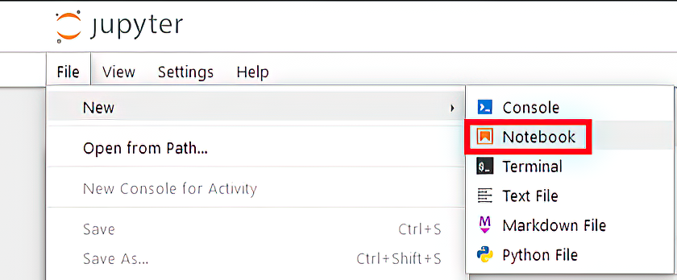

人工智能应用主要通过提示词与大型语言模型进行交互—这些结构化的输入旨在引导模型的行为。这有点像给一位才华横溢但经验不足的同事下达指令：你的指示越清晰、越具体，得到的结果就越好。为了获得准确且相关的输出，提示词需要根据任务精心设计与定制。在实战中，提示词设计是影响应用性能表现的最重要因素之一。
提示词工程—即设计和优化提示词以引导大语言模型输出的实践—是构建大语言模型应用的核心技能。你将花费大量时间创建、测试并迭代提示词，以确保你的系统能够提供可靠、高质量的结果。
在本章中，您将从提示词设计的基础知识开始，逐步过渡到更复杂的技术，例如思维链（CoT）。LangChain的提示词工程工具套件，包括PromptTemplate和FewShotPromptTemplate，这将是您学习如何在应用程序中充分利用大语言模型全部潜力的关键资源。
大语言模型应用依赖精心设计的提示词来生成补全内容，这些内容随后会传递给链中的下一个组件。与在ChatGPT等界面中手动输入的提示词不同，LangChain的提示词通常作为更大工作流的一部分，通过编程方式构建并发送给大语言模型。以下章节首先介绍如何直接使用OpenAI API来设置和执行提示词，然后我们将探讨如何在LangChain内部运行和管理提示词。在深入之前，请确保你已经掌握了这些基础知识：
如果您不熟悉这些任务，请查阅附录A获取指导，并按照附录B中的说明设置Jupyter Notebook环境。
假设您已完成所有先决条件，本节将指导您设置用于提示词工程的Jupyter Notebook环境，本章所有示例都将使用此环境。在本章及本书后续部分中，我将演示如何在Windows系统上设置Jupyter。如果您使用其他操作系统，请参阅附录B获取针对特定平台的安装说明。
打开您操作系统的终端（此处以Windows命令提示符为例），创建一个名为ch02的新项目文件夹。或者，您也可以克隆本书关联的GitHub仓库：https://mng.bz/YZma。然后，进入ch02文件夹：
C:\Github\building-llm-applications\ch02>
使用venv创建并激活虚拟环境：
C:\Github\building-llm-applications\ch02>python -m venv env_ch02 C:\Github\building-llm-applications\ch02>.\env_ch02\Scripts\activate
现在你应该能看到更新后的操作系统提示符，在前面显示环境名称(env_ch02)：
(env_ch02) C:\Github\building-llm-applications\ch02>
激活虚拟环境之后，您现在已经为实现一个用于通过OpenAI模型执行提示词的Jupyter Notebook做好了准备。如果您从GitHub克隆了代码库 (https://mng.bz/YZma)或从曼宁出版社网站下载了zip格式的代码文件，您可以按如下方式安装Jupyter和OpenAI包：
(env_ch02) C:\Github\building-llm-applications\ch02>
↪pip install -r requirements.txt
然后，您可以启动notebook：
(env_ch02) C:\Github\building-llm-applications\ch02>
↪jupyter notebook 02-prompt_examples.ipynb
如果你决定从头开始本地构建所有内容，请确保安装了requirements.txt中列举的相同版本的软件包—这将有助于你避免后续的版本冲突。在本书的剩余部分，我将假设你已从GitHub克隆了项目仓库或从曼宁出版社网站下载了源代码。
大概1分钟后，notebook和OpenAI包应该就安装完成了。你可以通过执行以下命令来启动Jupyter Notebook：
(env_ch02) C:\Github\building-llm-applications\ch02>jupyter notebook
几秒钟后，在终端中您应该会看到一些输出。随后，浏览器窗口将会打开http://localhost:8888/tree地址。通过选择文件 > 新建 > Notebook来创建Notebook，如图2.1所示，然后重命名文件prompt_examples.ipynb。

创建notebook后，前往Jupyter菜单，选择文件 > 重命名，将notebook文件命名为02-prompt_examples.ipynb。现在您已准备好在notebook单元格中输入代码（如果你是从GitHub获取的notebook，直接执行即可）。
提示 如果您不熟悉Jupyter Notebook，请记住按Shift-Enter来执行每个单元格中的代码。
在本章的后续部分，我假设您已按照本节所述，设置好了虚拟环境、安装好了OpenAI库并启动了Jupyter Notebook实例。
在notebook的第一个单元格中，导入所需的库，并以安全的方式获取OpenAI API密钥（切勿硬编码密钥，以防被滥用）：
from openai import OpenAI
import getpass
OPENAI_API_KEY = getpass.getpass('Enter your OPENAI_API_KEY')
输入您的OpenAI API密钥后（只需按下Enter键，无需Shift键），按如下方式设置OpenAI客户端：
client = OpenAI(api_key=OPENAI_API_KEY)
在下一个notebook单元格中，输入并执行以下代码：
prompt_input = """Write a concise message to remind
users to be vigilant about phishing attacks."""
# 上述提示词的中文翻译
prompt_input_ZH_CN = """编写一条简洁的信息，提醒用户警惕网络钓鱼攻击。"""
response = client.chat.completions.create(
model="gpt-5-nano",
messages=[
{"role": "system", "content": "You are a helpful assistant."}, //你是一个有用的助手
{"role": "user", "content": prompt_input}
]
)
print(response)
注意 为了维持较低的执行成本，我们使用GPT-5-nano模型，这是GPT-5系列中最小且最经济的模型。您将在本书的大部分内容中看到它的使用。不过，如果您希望获得更高的精确度，您可以自由切换到GPT-5-mini或GPT-5。您可以在https://platform.openai.com/docs/models了解更多关于OpenAI模型的详细信息。
输出结果看起来将如下所示（尽管由于大语言模型的不确定性特性，可能会略有不同）：
ChatCompletion(id='chatcmpl-CFkN43Xs80ohhDJVIDeRUSID8RXNo', choices=[Choice( finish_reason='stop', index=0, logprobs=None, message=ChatCompletionMessage( content='Be vigilant against phishing: verify the sender, hover over links to check URLs, don’t click suspicious attachments or share passwords, and report anything suspicious to IT.', refusal=None, role='assistant', annotations=[], audio=None, function_call=None, tool_calls=None))], created=1757869206, model ='gpt-5-nano-2025-08-07', object='chat.completion', service_tier='default', system_fingerprint=None, usage=CompletionUsage(completion_tokens=553, prompt_tokens=32, total_tokens=585, completion_tokens_details= CompletionTokensDetails(accepted_prediction_tokens=0, audio_tokens=0, reasoning_tokens=512, rejected_prediction_tokens=0), prompt_tokens_details=PromptTokensDetails(audio_tokens=0, cached_tokens=0)))
为了获得更清晰的输出，请探索响应对象的属性和特性：
print(response.choices[0].message.content)
您将看到类似如下的输出：
Be vigilant against phishing: verify the sender, hover over links to check URLs, don’t click suspicious attachments or share passwords, and report anything suspicious to IT.
译文：警惕网络钓鱼：核实发件人身份，鼠标悬停于链接之上以检查访问网址，不要点击可疑附件或分享密码，发现可疑情况请及时向IT部门报告。
注意 如果您不熟悉，其实我用来构建提示词的三对双引号 (""")允许您以非常易读的方式输入跨多行的文本块，而无需引入换行符(\n)，这对于捕获提示词来说是理想的选择。
既然你已经掌握了以编程方式提交提示词的基本方法，那么现在你可以开始学习并使用更复杂的提示词了。
在转向更高级的提示词之前，让我先展示如何在LangChain中复现相同的示例，以帮助您熟悉其对象模型。在接下来的章节中，我将演示LangChain如何简化更复杂提示词的实现，而这些提示词如果从头开始实现将会更具挑战性。
如果您按照第2.1节的说明安装了所需的Python包，那么您应该已经安装了langchain和langchain-openai包。现在，您已准备好使用这些库并实例化一个与大语言模型的连接：
from langchain_openai import ChatOpenAI
llm = ChatOpenAI(openai_api_key=OPENAI_API_KEY,
model_name="gpt-5-nano")
现在，您可以按照以下方式实例化并执行之前看到的提示词：
prompt_input = """Write a concise message to remind users to be vigilant about phishing attacks.""" # 上述提示词的中文翻译 prompt_input_ZH_CN = """编写一条简洁的信息，提醒用户警惕网络钓鱼攻击。""" response = llm.invoke(prompt_input) print(response.content)
它将返回类似如下的输出：
Stay vigilant against phishing: verify the sender, hover over links to check URLs before clicking, never share passwords, and report suspicious messages.
译文：警惕网络钓鱼：核实发件人身份，鼠标悬停于链接之上以检查访问网址，不要点击可疑附件或分享密码，发现可疑情况请及时向IT部门报告。
在构建大语言模型应用时，创建能够通过参数整合用户输入的灵活提示词模板至关重要。LangChain通过其PromptTemplate类简化了这一过程，它允许您管理和复用参数化提示词，而无需编写自定义函数。这不仅简化了动态提示词的创建，还提升了大语言模型交互的效率和适应性，稍后我将进行演示。
为了说明模板的概念，让我们创建一个文本摘要模板，它需要请求文本内容、期望的摘要长度以及偏好的语气风格。你可以通过一个简单的Python函数来实现：
def generate_text_summary_prompt(text, num_words, tone):
return f"You are an experienced copywriter. Write a
↪{num_words} words summary of the following text, using a
↪{tone} tone: {text}"
让我们使用提示词模板来生成一个提示词，然后像往常一样通过LangChain的ChatOpenAI包装器来执行它：
segovia_aqueduct_text = """The Aqueduct of Segovia (Spanish:
Acueducto de Segovia) is a Roman aqueduct in Segovia, Spain.
It was built around the first century AD to channel water from
springs in the mountains 17 kilometres (11 mi) away to the
city's fountains, public baths and private houses, and was in
use until 1973.
Its elevated section, with its complete arcade of 167 arches,
is one of the best-preserved Roman aqueduct bridges and the
foremost symbol of Segovia, as evidenced by its presence on the
city's coat of arms.
The Old Town of Segovia and the aqueduct, were declared a UNESCO
World Heritage Site in 1985. As the aqueduct lacks a legible
inscription (one was apparently located in the structure's attic,
or top portion[citation needed]), the date of construction cannot be
definitively determined. The general date of the Aqueduct's
construction was long a mystery, although it was thought to have
been during the 1st century AD, during the reigns of the Emperors
Domitian, Nerva, and Trajan. At the end of the 20th century,
Géza Alföldy deciphered the text on the dedication plaque by
studying the anchors that held the now missing bronze letters
in place. He determined that Emperor Domitian (AD 81–96) ordered
its construction[1] and the year 98 AD was proposed as the most
likely date of completion.[2] However, in 2016 archeological
evidence was published which points to a slightly later date,
after 112 AD, during the government of Trajan or in the
beginning of the government of emperor Hadrian,
from 117 AD."""
# 上述提示词译文
segovia_aqueduct_text_ZH_CN = """
塞戈维亚水道（西班牙语：Acueducto de Segovia）是位于西班牙塞戈维亚的一座罗马水道。它建于公元1世纪左右，将17公里（11英里）外山中的泉水引至城内的喷泉、公共浴池和私人住宅，一直使用至1973年。
其高架部分及其完整的167拱拱廊，是保存最完好的罗马水道桥之一，也是塞戈维亚最重要的象征，这一点从它出现在该市的市徽上可见一斑。
塞戈维亚老城区和水道于1985年被联合国教科文组织列为世界遗产。由于水道缺乏清晰的铭文（铭文显然位于建筑物的阁楼或顶部[需提供引用]），因此无法确切确定其建造日期。水道的建造日期长期以来一直是个谜，尽管人们认为它建于公元1世纪，即多米提安、涅尔瓦和图拉真皇帝在位期间。20世纪末，盖佐·阿尔福尔迪通过研究固定现已缺失的青铜字母的锚，破译了铭牌上的文字。他确定是多米提安皇帝（公元81-96年在位）下令建造的[1]，并认为公元98年是最可能的完工日期[2]。然而，2016年公布的考古证据指出，完工日期稍晚，是在公元112年之后，即在图拉真政府时期或公元117年哈德良皇帝政府初期。
"""
input_prompt = generate_text_summary_prompt(
text=segovia_aqueduct_text,
num_words=20,
tone="knowledgeable and engaging")
response = llm.invoke(input_prompt)
print(response.content)
您应该会看到类似如下的输出：
The Aqueduct of Segovia, built in the 1st century AD, is a well-preserved Roman structure and a UNESCO World Heritage Site.
译文：塞戈维亚水道建于公元1世纪，是一座保存完好的罗马建筑，也是联合国教科文组织认定的世界遗产。
With LangChain, you don’t need to implement a prompt template function manually. Instead, you can use the convenient PromptTemplate class to handle parametrized templates. Here’s how you can use it:
from langchain_core.prompts import PromptTemplate
prompt_template = PromptTemplate.from_template(
"""You are an experienced copywriter.
Write a {num_words} words summary of the following text,
using a {tone} tone: {text}""")
To use the prompt template, create a prompt instance, and format it with your parameters:
prompt = prompt_template.format(
text=segovia_aqueduct_text,
num_words=20,
tone="knowledgeable and engaging")
Then, invoke the ChatOpenAI client with the formatted prompt:
response = llm.invoke(prompt) print(response.content)
This will generate output similar to what’s shown here (as you now understand, the exact output may differ from what’s printed in the book, so I won’t repeat this point on the next page):
The Aqueduct of Segovia, a Roman marvel built in the 1st century AD, channels water to Segovia's fountains and baths.
Let’s take a short break from coding with LangChain. I want to delve deeper into prompt engineering. In the upcoming pages, you’ll see that a good prompt can have various elements, depending on your goal, task complexity, and desired accuracy. By learning from different prompt variations, you’ll be able to handle both simple and complex prompts, adjusting their complexity to fit specific cases.
Creating effective prompts is crucial for getting the best results in LangChain applications. Whether your app is focused on text classification, sentiment analysis, summarization, text generation, or question answering, each task requires a carefully designed prompt. In the following sections, we’ll dive into how to craft prompts tailored to these specific tasks, ensuring your application functions as intended.
Although these prompting techniques are key to developing LangChain applications, we’ll use ChatGPT for now to keep things simple and explain prompt engineering concepts more clearly. The patterns you learn here will directly apply to the LLM apps we build with LangChain in the upcoming chapters.
In classification, the goal is to assign an input text to one of several predefined categories. The following prompt demonstrates this concept—try entering it into ChatGPT, which we’ll use throughout this section:
Instruction Classify the following text into one of these categories: history, tech, gardening.
Text Headphones provide immersive audio experiences for music lovers and gamers alike.
“The text “Headphones provide immersive audio experiences for music lovers and gamers alike.” should be classified as “tech” because it discusses technology-related products and their functionality.
The output is overly detailed. Let’s revise the prompt and specify to display the category only.
Instruction Classify the following text into one of these categories: history, tech, gardening.
Text Headphones provide immersive audio experiences for music lovers and gamers alike.
Output only the category
“Tech
Now categorize another sentence by applying the same prompt and only altering the text:
Instruction Classify the following text into one of these categories: history, tech, gardening.
Text Julius Caesar was a Roman general and statesman who played a pivotal role in thedemise of the Roman Republic and the rise of the Roman Empire.
Output only the category
“History
In summary, in a standard text classification prompt, you find three components: an Instruction, the input Text, and an Output specification. Next, let’s delve into a slightly specialized text classification: sentiment analysis.
Sentiment analysis is a specific type of text classification that aims to determine whether a given text is perceived as positive, neutral, or negative. Following are three sample prompts (and expected responses) that you can experiment with independently:
Instruction Classify the following text as positive, neutral or negative
Text Apple has announced stellar quarterly results
“Positive
Instruction Classify the following text as positive, neutral or negative
Text this is the worst movie I have watched this month
“Negative
Instruction Classify the following text as positive, neutral or negative
Text The customer bought a green dress
“Neutral
If you have a list of texts and want to analyze their sentiments collectively, you can input them all into a single prompt:
Instruction classify the sentiment of following stock reports as positive, neutral or negative
Stock 1: Apple: the launch of the new iPhone has been a success
Stock 2: Nvidia: sales are being propelled by consumer demand on LLMs
Stock 3: GX oil: demand of carbon based energy is dropping thanks to the increase of renewable energy
Output output a table with the columns “stock name”, “sentiment”
| Stock Name | Sentiment | |-------------|-----------| | Apple | positive | | Nvidia | positive | | GX oil | negative |
As you can see, in this scenario, the output is formatted in a table and can be readily processed programmatically. Next, let’s create a prompt for one of the most common LLM use cases: text summarization.
Creating a text summarization prompt is simple: you only need to ask for a summary of an input text with your preferred length.
Instruction write a 30 word summary for the following text
Text Home PCs from the 1980s were iconic pioneers of personal computing. Computers like the Apple II, IBM PC, and Commodore 64 revolutionized how we lived and worked. They introduced us to word processing, gaming, and the possibilities of home computing. The graphical user interface, as seen in the Apple Macintosh, changed the way we interacted with machines. These PCs, though less powerful by today’s standards, ignited a digital revolution, shaping the technology landscape we know today. They hold a special place in history, symbolizing the dawn of a new era in computing that laid the foundation for the modern digital age.
“1980s home PCs like Apple II, IBM PC, Commodore 64 pioneered personal computing, introducing word processing, gaming, and GUIs. They shaped today’s tech, symbolizing a digital era’s dawn.
You can also ask the LLM to provide a summary for a text it’s already familiar with:
Instruction Write a one sentence summary of the Lord of the Rings
““The Lord of the Rings” follows the epic journey of a diverse group of characters as they seek to destroy a powerful ring and save Middle-earth from the dark lord Sauron.
LLMs are part of the AI category called generative AI. While LLMs can handle audio and video, when prompted with text, they can generate new content, like a paragraph or sentence, based on a list of facts, for example:
Write a piece on the diver watches, mentioning the following facts:
“The Rolex Oyster Perpetual, introduced in the early 20th century, played a pioneering role in the evolution of diver watches. Among its notable features was its remarkable water-resistant design, which set the stage for the development of truly waterproof timepieces. This innovation marked a crucial step in ensuring that watches could withstand the rigors of underwater exploration.
Omega, a respected Swiss watchmaker, made its mark on the diver watch scene in 1948 with the introduction of the Seamaster. This timepiece was a game-changer as it was purposefully designed for divers, combining style and functionality. The Seamaster didn’t stop at design; it also showcased its capabilities in the depths. In 1955, it set a remarkable world record for immersion, descending to an astonishing 62.5 meters underwater.
Not to be outdone, Rolex joined the fray by producing the first Submariner in 1953. This iconic watch quickly became synonymous with underwater exploration and adventure. Its success was further boosted by its association with the fictional British spy, James Bond. However, the tides of popularity shifted in 1995 when James Bond, portrayed by Pierce Brosnan, made a bold move by strapping on an Omega Seamaster in “GoldenEye.” This marked the beginning of a new era for the Seamaster, as it became the watch of choice for the world’s most famous secret agent.”
You may notice that ChatGPT has used the limited information to create a quite lengthy article. On the other hand, you might have expected a shorter piece and may not be a fan of the complex vocabulary or somewhat formal tone it used. In such a situation, try restructuring the prompt more systematically to get the generated text to match your preferred length, vocabulary, and tone:
Persona you’re a watch enthusiast, experienced in writing high quality articles for watch magazines for a general audience
Instruction Write a piece on the diver watches
Facts to mention:
Tone use a sober, knowledgeable but not too formal tone and use everyday vocabulary
Output the length of the article should be 150 words at most
“**Diver Watches: Timepieces of Exploration and Style**
Diver watches have long been cherished for their blend of functionality and aesthetics, a perfect companion for both the adventurous spirit and the style-conscious.
Rolex deserves recognition for pioneering water resistance with the Oyster Perpetual, setting the stage for a new era in watchmaking.
Omega, however, made a significant splash in 1948 with the Seamaster, the world’s first purpose-designed diver watch. Its 1955 record dive of 62.5 meters underlines its prowess in the deep.
Rolex didn’t lag behind, introducing the Submariner in 1953, a watch that became synonymous with exploration, partly due to its affiliation with James Bond on-screen.
Speaking of James Bond, it’s worth noting that in 1995, the iconic secret agent started sporting the Omega Seamaster, a move that reinforced the Seamaster’s reputation as a sophisticated yet rugged timepiece for those who dare to explore both land and sea. These diver watches are more than instruments; they’re symbols of adventure and style.
By adding more details to the prompt, the article has been generated exactly as you wanted it.
note Creating a well-structured prompt with defined sections (Persona, Instruction, Facts, Tone, Output Format) helps the LLM understand your requirements better and generate the expected text.
The ability of LLMs to “understand” text makes them suitable not only for summarizing but also for retrieving specific information, known as the question answering use case. Now let’s go back to the same text we used in the summarization example and ask focused questions about its content.
Instruction read the following text, and tell me which home computers were popular in the 80s.
Text Home PCs from the 1980s were iconic pioneers of personal computing. Computers like the Apple II, IBM PC, and Commodore 64 revolutionized how we lived and worked. They introduced us to word processing, gaming, and the possibilities of home computing. The graphical user interface, as seen in the Apple Macintosh, changed the way we interacted with machines. These PCs, though less powerful by today’s standards, ignited a digital revolution, shaping the technology landscape we know today. They hold a special place in history, symbolizing the dawn of a new era in computing that laid the foundation for the modern digital age.
Output just output the names of the computers in a list
“The popular home computers in the 1980s were:
Question answering is such a common use case that most LLMs understand Q and A as shorthand for Question and Answer. For example:
Text Java is a popular programming language that compiles code into bytecode, which is executed by the Java Virtual Machine (JVM) for platform-independent application development.
Q: Where is Java code executed?
A:
“Java code is executed by the Java Virtual Machine (JVM).
LLMs are skilled not just at finding requested information in a text but also at making logical deductions. This will become apparent in the next section.
While reasoning is a powerful capability, it’s an area where LLMs are still improving. Therefore, you might need more advanced prompt engineering techniques to get the results you want. Here’s a simple example involving mathematical reasoning:
Instruction Add the square numbers in this sequence: 19, 13, 1, 17, 4, 64, 900
“The square numbers in the sequence 19, 13, 1, 17, 4, 64, and 900 are 1, 4, 64, and 900. To find their sum:
1 + 4 + 64 + 900 = 969
So, the sum of the square numbers in this sequence is 969.
ChatGPT identified the square numbers, picked them out, and then calculated their total. The next example is more challenging, involving palindromes—numbers that read the same forward and backward, such as 1661 or 27872:
Instruction Sum the palindromes in this sequence: 13, 1331, 121, 73, 99, 56, 232, 7
I got this output:
“The palindromes in the sequence 13, 1331, 121, 73, 99, 56, 232, and 7 are 1331, 121, 232, and 7. To find their sum:
1331 + 121 + 232 + 7 = 1691
So, the sum of the palindromes in this sequence is 1691.
This is incorrect! A palindrome is a number that reads the same forward and backward. Therefore, 99 should have been considered a palindrome, but it wasn’t.
I’ll be frank with you: this output is what I encountered in the early stages of writing this book. However, you should now see a different and, more importantly, accurate output. It’s still valuable to explain how I corrected ChatGPT’s mistake before OpenAI addressed this in a later version of the model.
So how did I fix it? Because the earlier LLM version didn’t fully grasp the concept of a palindrome, I “taught” ChatGPT to correctly identify all relevant cases, as I’ll explain in the next section. Before moving on, take a moment to review the types of prompts you’ve learned as summarized in table 2.1.
|
Prompt type
|
Prompt example
|
|---|---|
| Text classification |
Classify the following text into one of these categories: history, tech, gardening. |
| Sentiment analysis |
Classify the following text as positive, neutral, or negative. |
| Text summarization |
Write a 30-word summary for the following text. |
| Composing text |
Write a piece on the diver watches, mentioning the following facts: • The Rolex Oyster Perpetual was among the first to be water resistant. • Omega produced the Seamaster in 1948 as the first purpose designed diver watch was the Seamaster. |
| Question answering |
Read the following text, and tell me which home computers were popular in the 80s. |
| Reasoning |
Add the square numbers in this sequence: 19, 13, 1, 17, 4, 64, 900. |
When developing LLM applications, particularly those requiring complex reasoning, it’s important to understand the limitations of different prompt techniques. For instance, zero-shot learning is a method in which you provide no examples, expecting the LLM to grasp and perform the task based purely on the instructions given. While this approach can work well in some scenarios, it doesn’t always yield accurate results for more intricate tasks, such as teaching an LLM to identify palindromes. In the following sections, I’ll demonstrate how to go beyond zero-shot learning to refine LLM prompts for more reliable performance in reasoning tasks.
When you provide just one example in the prompt, it’s called one-shot learning. Here’s how I attempted to address the palindrome problem by giving a single example:
Instruction Sum the palindromes in this sequence: 13, 1331, 121, 73, 99, 56, 232, 7
Example 33 is a palindrome
“I apologize for the previous oversight. Let’s correctly identify and sum the palindromes in this sequence: 13, 1331, 121, 73, 99, 56, 232, and 7.
The palindromes in the sequence are 1331, 121, 232, and 7. To find their sum:
1331 + 121 + 232 + 7 = 1691
So, the sum of the palindromes in this sequence is indeed 1691.
Unfortunately, even after using one-shot learning, the issue persisted. So I adjusted the prompt and included two examples.
Here is the amended prompt I used, followed by the output it produced. This output illustrates how the model interpreted the revised instructions and applied them within the context of this two-shot learning example.
Instruction Sum the palindromes in this sequence: 13, 1331, 121, 73, 99, 56, 232, 7
Examples:
33 is a palindrome
44 is a palindrome
“Certainly, let’s identify and sum the palindromes in the sequence: 13, 1331, 121, 73, 99, 56, 232, and 7.
The palindromes in this sequence are 1331, 121, 232, and 7. To find their sum:
1331 + 121 + 232 + 7 = 1691
So, the sum of the palindromes in this sequence is 1691.
Still incorrect: 99 got overlooked once again. Following another unsuccessful attempt, I explored different approaches and found a standard solution. It suggested breaking down the problem into steps and providing clear instructions for each step. This is similar to guiding a colleague who may be struggling with a specific step in a procedure.
This is the amended prompt I entered, along with the resulting output it generated. This output demonstrates how the model followed the revised instructions and applied the step-by-step reasoning approach required for this example.
Instruction Sum the palindromes in this sequence: 13, 1331, 121, 73, 99, 56 232, 7
Examples:
33 is a palindrome
44 is a palindrome
Steps: 1) identify the palindromes; 2) add them up
“Certainly, let’s follow your instructions step by step:
Step 1: Identify the palindromes in the sequence.
Palindromes in the sequence:
Step 2: Add them up.
1331 + 121 + 99 + 232 + 7 = 1790
So, the sum of the palindromes in the sequence is 1790.
Finally, I nailed it! Interestingly, it appears that ChatGPT has undergone a similar training process (on a much larger scale, of course) to fix this issue. To show this, if you enter the original prompt as
Instruction Sum the palindromes in this sequence: 13, 1331, 121, 73, 99, 56, 232, 7
you’ll now see the following output:
“Let’s identify the palindromes in the given sequence:
Now, let’s add these palindromes together:
1331 + 121 + 99 + 232 + 7 = 1790
Therefore, the sum of the palindromes in the sequence is 1790.
It appears that ChatGPT is tackling the problem step-by-step, much like I did. Reasoning models such as GPT-5 Thinking often decompose problems on their own, without being told what steps to follow. However, in more complex cases—especially when the steps are deterministic—it’s still useful to spell them out explicitly in the prompt. This ensures the LLM follows the intended sequence rather than inventing its own, which could lead to errors.
I found it interesting to share an example that’s no longer relevant. This is something you might experience while working with LLMs: you could invest time in teaching the LLM certain tasks using advanced prompt engineering techniques, only to find that a newer model version can handle the task without any additional training. For instance, OpenAI’s GPT-5 model performed reasoning tasks with minimal prompts. These tasks previously required more complex prompts such as the few-shot techniques you’re about to learn.
In some cases, providing only two examples may not be enough to teach the LLM a new concept. In such instances, you need to provide several examples, known as few-shot learning. To demonstrate this, let me create a game where a number can be classified as Abra, Kadabra, or Abra Kadabra. Let’s see what happens when no information about the classification rules is provided.
Classify the following numbers as Abra, Kadabra or Abra Kadabra:
3, 5, 8, 2, 7, 12, 13
“The classification of numbers into “Abra,” “Kadabra,” or “Abra Kadabra” doesn’t follow a conventional mathematical pattern. These are just words, not related to numbers. Therefore, it’s not possible to classify the numbers you provided as “Abra,” “Kadabra,” or “Abra Kadabra” based on any mathematical or logical criteria.
ChatGPT hasn’t experienced any hallucinations but rightfully pointed out that you haven’t clarified the classification rules. Now I’ll show you a prompt that, instead of directly explaining the rules, offers an interpretation based on a specific list of numbers, different from the ones I originally asked to be addressed:
Classify the following numbers as Abra, Kadabra or Abra Kadabra:
3, 4, 5, 7, 8, 10, 11, 13, 35
Examples:
6 // not divisible by 5, not divisible by 7 // None
15 // divisible by 5, not divisible by 7 // Abra
12 // not divisible by 5, not divisible by 7 // None
21 // not divisible by 5, divisible by 7 // Kadabra
70 // divisible by 5, divisible by 7 // Abra Kadabra
Observe the format I’ve employed for every example: I’ve delineated each field with a double forward slash (//), although I haven’t explicitly outlined the meaning of each field. I’m trusting the LLM to decipher it. Here’s the output:
“Let’s classify the numbers as Abra, Kadabra, or Abra Kadabra based on whether they are divisible by 5 and/or 7:
3: Not divisible by 5, not divisible by 7 - None
4: Not divisible by 5, not divisible by 7 - None
5: Divisible by 5, not divisible by 7 - Abra
7: Not divisible by 5, divisible by 7 - Kadabra
8: Not divisible by 5, not divisible by 7 - None
10: Divisible by 5, not divisible by 7 - Abra
11: Not divisible by 5, not divisible by 7 - None
13: Not divisible by 5, not divisible by 7 - None
35: Divisible by 5, divisible by 7 - Abra Kadabra
So, here’s the classification:
Abra: 5, 10, 35
Kadabra: 7
Abra Kadabra: 35
None: 3, 4, 8, 11, 13
ChatGPT not only provided accurate results but also explained the reasoning behind them. It successfully deduced the general rules from the given examples and articulated them well. Quite impressive, isn’t it?
Note You may be familiar with a similar number classification game or “divisibility test algorithm,” as it’s called on Stack Overflow (https://mng.bz/GwzJ), where a number divisible by 3 is labeled “Foo,” a number divisible by 5 is labeled “Bar,” and a number divisible by both 3 and 5 is labeled “Foo Bar.” I haven’t used this as an example because ChatGPT already knows it and can correctly classify numbers without examples, using zero-shot learning.
Let’s implement the AbraKadabra game with LangChain. First, establish a connection to the LLM, as you did previously:
from langchain_openai import ChatOpenAI
llm = ChatOpenAI(openai_api_key=OPENAI_API_KEY,
model_name="gpt-5-mini")
Now define and run the same few-shot prompt you executed previously directly against ChatGPT:
prompt_input = """Classify the following numbers as Abra, Kadabra
↪or Abra Kadabra:
3, 4, 5, 7, 8, 10, 11, 13, 35
Examples:
6 // not divisible by 5, not divisible by 7 // None
15 // divisible by 5, not divisible by 7 // Abra
12 // not divisible by 5, not divisible by 7 // None
21 // not divisible by 5, divisible by 7 // Kadabra
70 // divisible by 5, divisible by 7 // Abra Kadabra
"""
response = llm.invoke(prompt_input)
print(response.content)
The output is as expected:
3 // not divisible by 5, not divisible by 7 // None 4 // not divisible by 5, not divisible by 7 // None 5 // divisible by 5, not divisible by 7 // Abra 7 // not divisible by 5, divisible by 7 // Kadabra 8 // not divisible by 5, not divisible by 7 // None 10 // divisible by 5, not divisible by 7 // Abra 11 // not divisible by 5, not divisible by 7 // None 13 // not divisible by 5, not divisible by 7 // None 35 // divisible by 5, divisible by 7 // Abra Kadabra
The output is accurate, but the implementation isn’t ideal because the examples are hardcoded in the prompt. LangChain provides a cleaner solution for creating a few-shot prompt. It lets you separate the training examples from the prompt template and inject them later, as shown in the following listing.
FewShotPromptTemplatefrom langchain_core.prompts.few_shot import FewShotPromptTemplate
from langchain_core.prompts.prompt import PromptTemplate
examples = [
{
"number": 6,
"reasoning": "not divisible by 5 nor by 7",
"result": "None"
},
{
"number": 15,
"reasoning": "divisible by 5 but not by 7",
"result": "Abra"
},
{
"number": 12,
"reasoning": "not divisible by 5 nor by 7",
"result": "None"
},
{
"number": 21,
"reasoning": "divisible by 7 but not by 5",
"result": "Kadabra"
},
{
"number": 70,
"reasoning": "divisible by 5 and by 7",
"result": "Abra Kadabra"
} ]
example_prompt = PromptTemplate(input_variables=["number",
↪"reasoning", "result"],
↪template="{number} \\ {reasoning} \\ {result}")
few_shot_prompt = FewShotPromptTemplate(
examples=examples,
example_prompt=example_prompt,
suffix="Classify the following numbers as Abra, Kadabra
↪or Abra Kadabra: {comma_delimited_input_numbers}",
input_variables=["comma_delimited_input_numbers"]
)
prompt_input = few_shot_prompt.format(
↪comma_delimited_input_numbers="3, 4, 5, 7, 8, 10, 11, 13, 35.")
response = llm.invoke(prompt_input)
print(response.content)
The result is still correct:
3 \ not divisible by 5 nor by 7 \ None 4 \ not divisible by 5 nor by 7 \ None 5 \ divisible by 5 but not by 7 \ Abra 7 \ divisible by 7 but not by 5 \ Kadabra 8 \ not divisible by 5 nor by 7 \ None 10 \ divisible by 5 but not by 7 \ Abra 11 \ not divisible by 5 nor by 7 \ None 13 \ not divisible by 5 nor by 7 \ None 35 \ divisible by 5 and by 7 \ Abra Kadabra
Finally, I want to introduce you to the CoT technique, which blends providing logical steps with few-shot learning. Here, I’m making up a new mathematical definition in which a sequence of numbers is called “strange” if it contains at least two odd numbers and the sum of all odd numbers is divisible by 3. Initially, I check whether the LLM is unfamiliar with the rules of strange sequences:
Is the following sequence “strange”?
3, 4, 5, 7, 10, 18, 22, 24
“The sequence you provided appears to be increasing, but it doesn’t follow a common mathematical pattern like arithmetic or geometric progressions. Whether it’s considered “strange” depends on the context or criteria you’re using to define “strange.” In a mathematical sense, it might be considered an unusual or nonstandard sequence. If you’ve specific criteria or rules that define what a “strange” sequence is, please provide more details for a more precise classification.
As expected, ChatGPT doesn’t seem to understand the concept of a “strange” sequence, reaffirming that, luckily, it hasn’t developed psychic abilities—yet.
I’ll now create a prompt using the CoT technique, as introduced by Wei et al. (https://arxiv.org/abs/2201.11903). This prompt, an extension of a few-shot learning prompt, will include the following:
Q: Is the following sequence “strange”?
3, 4, 5, 7, 10, 18, 22, 24
Examples:
Q: is the following sequence strange: 1, 4, 6, 8, 20
A: 1 is an odd number; I need at least two odd numbers // Not Strange
Q: is the following sequence strange: 5, 6, 7, 8, 20
A: 5 and 7 are odd numbers; the sum of 5 and 7 is 12; 12 is divisible by 3 // Strange
Q: is the following sequence strange: 1, 5, 6, 7, 8, 20
A: 1, 5 and 7 are odd numbers; the sum of 1, 5 and 7 is 13; 13 is not divisible by 3 // Not Strange
Q: is the following sequence strange: 5, 6, 7, 8, 9, 20
A: 5, 7, 9 are odd numbers; the sum of 5, 7 and 9 is 21; 21 is divisible by 3 // Strange
“Thank you for providing the examples and clarifications. Based on the criteria you’ve presented:
The sequence “3, 4, 5, 7, 10, 18, 22, 24” has 3 odd numbers: 3, 5, and 7. The sum of these odd numbers is 15. 15 is divisible by 3. So, according to the criteria, this sequence is **Strange**.
ChatGPT gave the right answer and explained its thought process. To reinforce your understanding, try using a similar prompt with a different set of numbers. In addition, observe how ChatGPT responds when the sequence contains just one odd number.
In this section, you’ve discovered how to introduce ChatGPT to a new task by offering various examples or outlining the necessary steps. This approach is known as in-context learning, as you’re instructing the LLM using information provided within the context of a prompt.
Definition In-context learning refers to any method that instructs an LLM on an unfamiliar task or instruction requested by the user, using examples within the prompt context. Common techniques include one-shot, two-shot, or few-shot learning, as well as providing step-by-step guidance, often referred to as a chain of thought. Compared to fine-tuning—which involves creating a specialized LLM from a general one by training it on domain-specific text—in-context learning is a more cost-effective and less resource-intensive approach. It doesn’t require high-end hardware such as GPUs or an in-depth understanding of transformer architectures.
This section covered a range of in-context learning prompts, which are summarized in table 2.2.
|
In-context learning technique
|
Explanation
|
|---|---|
| Zero-shot learning |
No example is provided in the prompt. |
| One-shot learning |
One example is provided in the prompt. |
| Two-shot learning |
Two examples are provided in the prompt. |
| Few-shot learning |
A number of examples are provided in the prompt. |
| Chain of Thought (CoT) |
A number of examples are provided in the prompt, and for each example, all the logical steps to achieve an objective are clearly explained. |
Before closing this chapter, let’s try to extract a standard prompt format from our examination of various use cases up to this point.
Combining all the prompt elements from earlier sections results in the following generalized structure:
This list acts as a guide or checklist for organizing prompts. Customize it based on your requirements, choosing relevant sections or making modifications. Here’s a prompt that includes many of these elements, structured with clear sections:
Persona You’re an experienced Large Language Model (LLM) developer and renowned speaker.
Context You’ve been invited to give a keynote speech for a LLM event.
Instruction Write the punch lines for the speech.
Input Include the following facts:
Tone Use a witty but entertaining tone.
Output format Present the text in two paragraphs of 5 lines each.
“Ladies and gentlemen, as we embark on this linguistic odyssey, remember this: In November 2022, ChatGPT didn’t just enter the scene; it was the linguistic equivalent of a rockstar’s encore, setting the stage for an epic word-tastic journey! Today, with LLAMA-2, Falcon180B, and Bard, it’s safe to say that LLMs have become the Beatles of the digital era, making search engines feel like yesterday’s news.
But here’s the kicker – companies are now falling over themselves, desperately trying to get these LLMs into their applications. It’s like the gold rush, but instead of panning for precious metal, we’re sifting through bytes of brilliant language. So, my friends, in this age where words wield the power, and LLMs are the mighty pens, we’re not just scripting the future; we’re penning a linguistic saga that’s bound to be a best-seller! Welcome to the age of LLMs, where we’re rewriting the rules, one sentence at a time, and words are the currency of change!
A more reliable way to enforce prompt structure—recommended in both OpenAI’s and Anthropic’s prompt engineering guidelines (see the resource list at the end of this section)—is to mark different sections of the prompt with XML-style tags. For example, the previous prompt could be written as
<Persona>
You’re an experienced Large Language Model (LLM) developer and renowned speaker.
</Persona>
<Context>
You’ve been invited to give a keynote speech for a LLM event.
</Context>
<Instruction>
Write the punch lines for the speech.
</Instruction>
<Input>
Include the following facts:
</Input>
<Tone>
Use a witty but entertaining tone.
</Tone>
<OutputFormat>
Present the text in two paragraphs of 5 lines each.
</OutputFormat>
NOTE Studies (e.g., “The Prompt Report: A Systematic Survey of Prompting Techniques,” https://arxiv.org/abs/2406.06608) have found that explicitly naming different parts of a prompt tends to improve results. However, you don’t have to name every section. Most LLMs can figure out the purpose of the text in the prompt on their own. So you can mix things up by naming some parts (e.g., Question or Examples) and leaving out names for others (e.g., Context or Tone). Experiment and see what works best for your case and the results you’re getting.
If you want to delve deeper into prompt engineering, I highly recommend the following resources:
{variable_name} in curly braces) that get replaced with actual values at runtime. This separates prompt structure from dynamic content. PromptTemplate for basic variable substitution. FewShotPromptTemplate dynamically selects examples based on input similarity, and ChatPromptTemplate structures multi-turn conversations. <persona>, <context>, <instruction>, <input>, <examples>. This follows OpenAI and Anthropic prompt engineering guidelines for clarity. messages=[{"role": "system", "content": "..."}, {"role": "user", "content": "..."}]. Roles include system, user, and assistant.